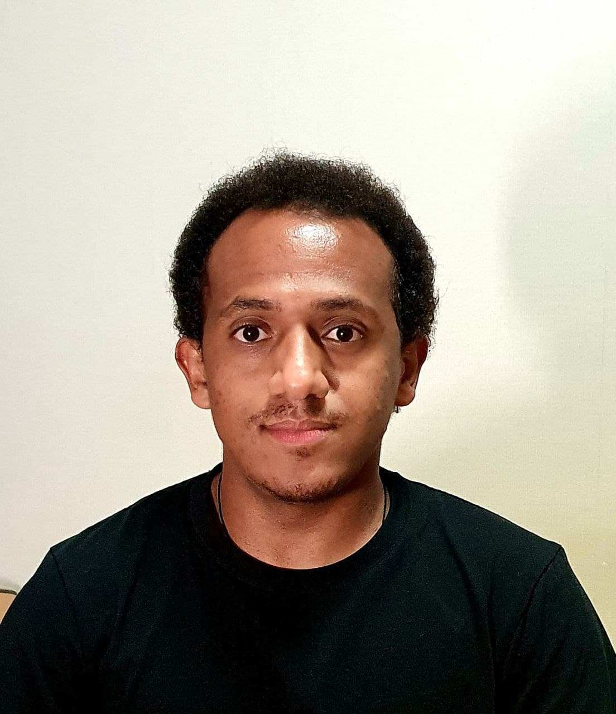

I am a MSc Student in the School of Computing Science at Simon Fraser University supervised by Prof. Alaa Alameldeen. I am Working on Memory architecture, processing in/near memory, secure cache and memory systems, memory reliability. Here is my CV.
Email : yonas_kelemework@sfu.ca
[Jan 2021 - Aug 2021] Research Intern – Computer Architecure and Systems Lab, School of Computing, KAIST Prof. Jongse Park
[Feb 2020 - Nov 2020] Research Intern - CAST Hardware Innovation Lab Prof. JooYoung Kim
[Feb 2019- Sep 2019] Research Intern - Computer Systems and Network Lab Prof. John Kim
Working ....
Simon Fraser University
© 2021